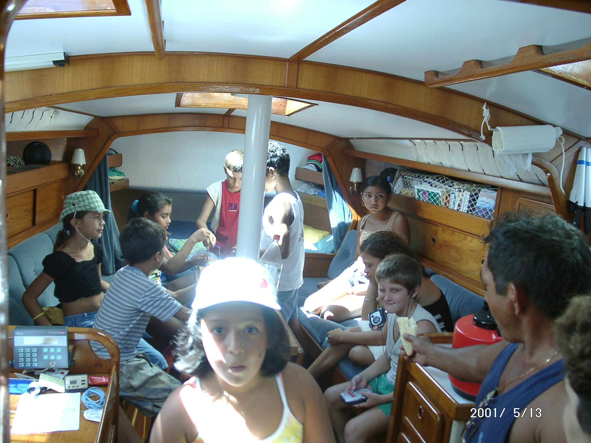
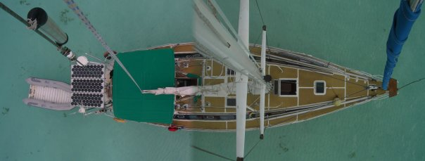
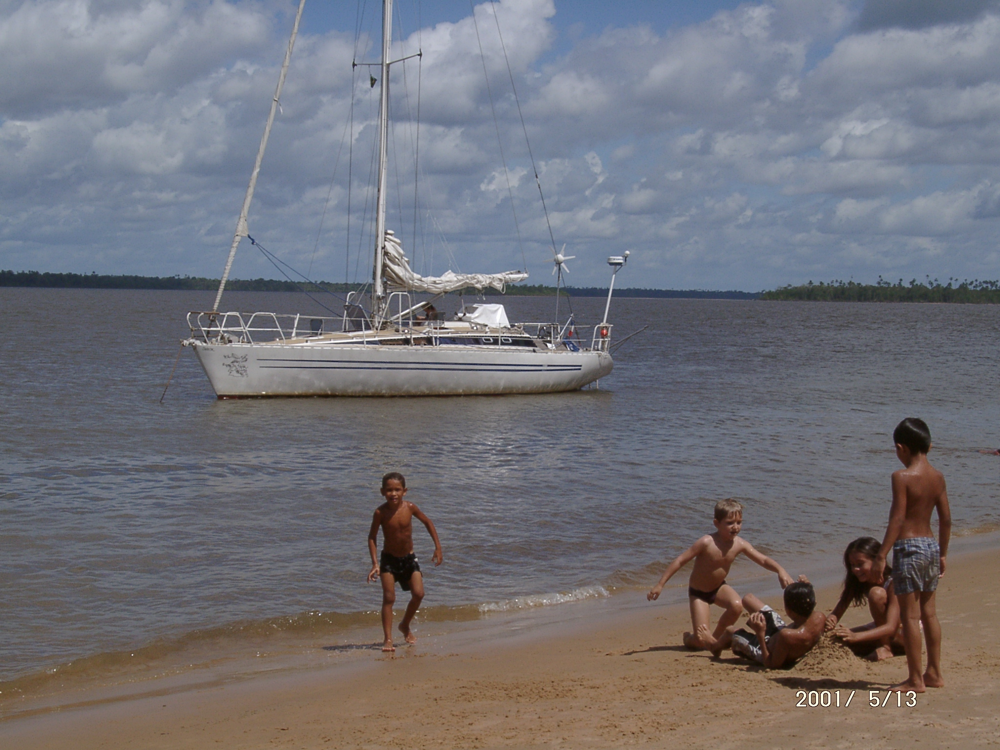

Project with a social and artistic vocation
Solidarity stays on sailboats and boat residences
Details
The association "Les Jeannettes" was created in 2024 with the aim of promoting short stays
at sea with a social and artistic vocation. It is particularly aimed at specific audiences and in particular
women victims of violence, lonely elderly people in precarious situations and SGM (sexual and gender minorities)
between 14 and 25 years old. The boat can also be a place of shelter. The association allows people who generally
have little or no access to it to experience sailing and the marine territory as a group, in a spirit of
solidarity sailing.


In connection with social structures, the beneficiaries will be accompanied on a practical part of
sailing (in order to seize the sea) as well as on workshops in connection with an art therapist and artistic
speakers. The sailboat will also be a tool for the dissemination of feminist literature, through a traveling
bookstore, which will moor punctually in different ports and on the same model a place/tool of artistic
residency for the project leader and occasional reception of other artists (creations, research, exhibitions).
What will the money collected be used for?
To the repair and preparation of the boat as well as the logistical assistance that Passe-Coque provides, whether ecological, social, humanitarian, or heritage-related, but above all maritime.